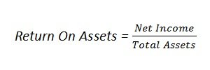

The return on assets ratio, often called the return on total assets, is a profitability ratio that measures the net income produced by total assets during a period by comparing net income to the average total assets. In other words, the return on assets ratio or ROA measures how efficiently a company can manage its assets to produce profits during a period, and is expressed as follows:
Examples (choose from the list or add a new one):
{% if form %} {% else %}| Year | Net income | Total assets | Return on assets |
| {{ roa.year }} | {{ roa.net_income }} | {{ roa.total_assets }} | {{ roa.return_on_assets }} |